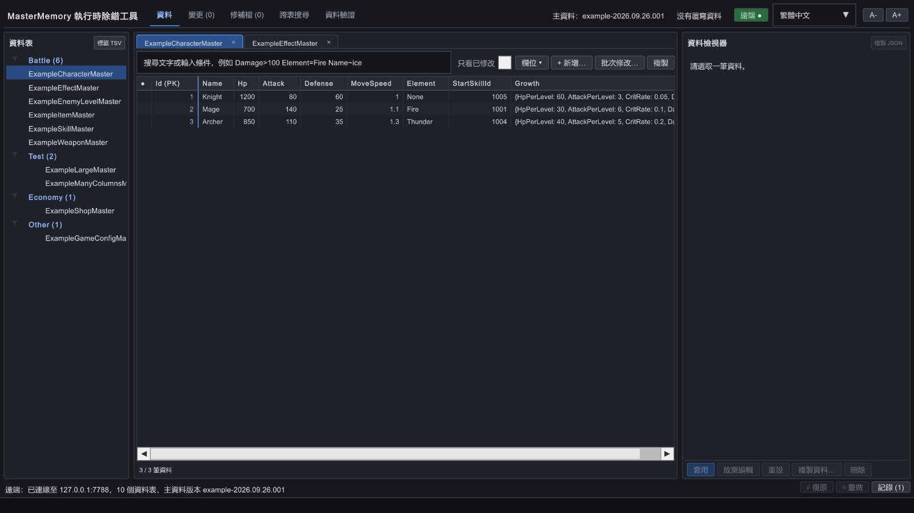
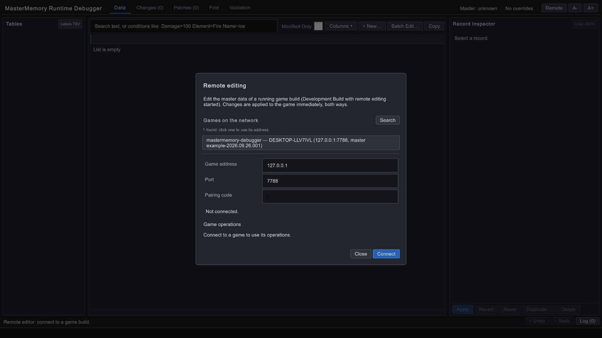
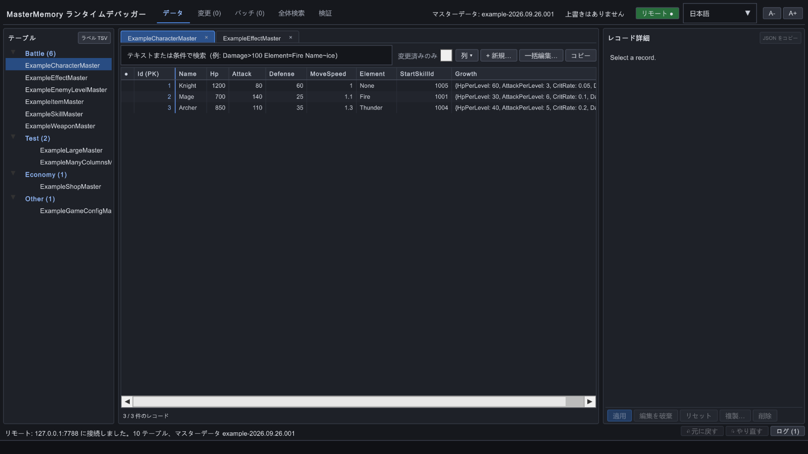

瀏覽與搜尋
依 Table 查看 Record、排序與篩選；Find 可跨表搜尋欄位、List 和巢狀物件。
Remote Editor 是從你的 Unity 專案建置的桌面工具。連上執行中的遊戲後，可以搜尋資料表、調整執行時數值、檢查變更、驗證關聯，並把結果存成 Patch。
畫面擷取自範例遊戲與實際 Remote Editor 工具模式。操作只建立 Runtime Override，不會改寫原始 MemoryDatabase。

工具與遊戲使用同一版本的 Record 型別。修改會同步到正在執行的遊戲；遊戲端的 Override 也會回傳給工具。
依 Table 查看 Record、排序與篩選；Find 可跨表搜尋欄位、List 和巢狀物件。
從 Inspector 修改欄位，批次 Set / Add / Multiply，或新增、複製、刪除 Record。支援 Undo / Redo。
Changes 比對原值與新值；複製或貼回 TSV，方便和試算表流程銜接。
保存、套用、合併與比較 JSON Patch；遊戲有啟用 AutoRebuild 時可查看 Validate 結果。
第一次試用建議匯入 Package Manager 的 Basic Example，用範例場景驗證整條流程。
安裝 MasterMemory 3.x 與本 Package，註冊 Table，並讓 Gameplay 經由 TryGetOverride / Resolve 或 AutoRebuild 讀取調整值。在 Project Settings → MasterMemory Debugger 開啟 Remote Server，或由程式呼叫 StartServer()。
遊戲 Build 必須勾選 Development Build。只需要遠端伺服器時，可關閉 Include Debugger UI；此時建議設定固定配對碼。
在同一份遊戲專案執行 ，指定輸出資料夾。選單會建立工具場景，並建置目前 Editor 平台的桌面 Development Build。
工具使用獨立的 Product Name、可調整視窗與 Mono；建置後會還原原本的 Player Settings。分發 Windows 版本時請保留整個輸出資料夾。
匯入 Basic Example，執行 並進入 Play Mode。Console 會顯示配對碼。開啟工具後可連 127.0.0.1:7788，輸入該配對碼完成首次連線。
搜尋不到遊戲時，試著手動輸入 IP。訪客 Wi-Fi、VPN 或防火牆可能擋住 UDP 搜尋；Android 經 USB 可使用 adb forward tcp:7788 tcp:7788，讓工具連 127.0.0.1。

在工具右上角選擇 English、繁體中文 或 日本語。選項會保存於 PlayerPrefs。語言只改變按鈕、提示、狀態與對話框；Table 與欄位仍用程式名稱，因此 Attack>=100 在每種語言都能直接使用。

介面文案由各語言 JSON 提供：檢視翻譯檔 ↗
Remote Editor 有兩種搜尋：Data 頁籤對目前資料表的 Record 篩選；跨表搜尋（Find）尋找所有已註冊資料表內的值。以下用實際範例畫面逐步說明。
先在 Data 頁籤選擇 Table，再點搜尋框。輸入 At，候選清單會提示 Attack。介面可選繁體中文或日文，但欄位與查詢一律使用 Record 的程式名稱。
At。Attack>=100。若沒有開頭相符的欄位，候選會改用「包含」比對。輸入 Element=F 時，可提示列舉值 Fire；布林值會提示 true / false。查詢記錄可在空白搜尋框中顯示，或按 ↓ 找最近條件。

At → Attack點圖放大 ↗輸入條件後會自動更新結果。以 ExampleCharacterMaster 為例，Attack>=100 可從 3 筆角色中找出 2 筆。多個條件以空白分隔，必須全部成立。

Attack>=100 → 2 / 3 筆資料 點圖放大 ↗| 輸入 | 效果 |
|---|---|
ice | 主鍵、顯示名稱或字串欄位包含 ice；不分大小寫 |
Damage>100 | 數值大於 100；支援 =、!=、>、>=、<、<= |
Name~blast | 欄位文字包含 blast |
Element=Fire | 用列舉名稱比對；不分大小寫 |
IsPassive=true | 比對布林值 |
Name="Ice Blast" | 值含空白時使用雙引號 |
UnlockLevel=null | 尋找 null 欄位 |
Category=1 Damage > 100 | 兩個條件都要成立；運算子兩側可留空白 |
有 Runtime Override 時，以覆寫後的值比對。欄位名稱不分大小寫，但必須使用程式名稱。
欄位不存在或值格式錯誤時，筆數旁顯示警告並略過該條件。預設最多顯示前 500 筆符合資料。
Batch Edit 作用於所有符合條件的 Record，包含畫面未顯示的後續筆數。執行前先確認查詢條件。
點工具頂部的「跨表搜尋」（英文 Find），輸入名稱、編號或其他值，按 Enter 或「跨表搜尋」。結果依 Table 和 Record 分組，點「開啟」可跳至該筆資料。
1001。結果很多時，勾選「完整值」或輸入更長的查詢字串。Find 頁籤開啟期間若 Override 改變，結果會重新計算。

1001：找出引用的 Record 點圖放大 ↗已知道 Table，想篩出符合多個欄位條件的 Record；可接著排序、檢查 Inspector 或批次修改。
只知道某個 ID、名稱或值，想知道它出現在哪些 Table、Record、List 或巢狀欄位。
以下截圖取自工具連上範例遊戲後的真實介面。點選頁籤查看對應畫面與操作重點。
左側選 Table，中間搜尋、排序並選擇 Record，右側 Inspector 查看欄位。PrimaryKey 與 SecondaryKey 會保持唯讀。
原始 MemoryDatabase 不會被工具直接改寫。變更位於 Runtime Override；Patch 保存在工具所在電腦，可匯出 JSON 交接，或用 TSV 回填主資料來源。
確認遊戲已啟動 Remote Server。區域網路搜尋使用 UDP 7787；訪客 Wi-Fi、VPN 或防火牆可能擋住廣播。可直接輸入遊戲 IP 與 TCP Port（預設 7788）。
核對配對碼、IP 與 Port；確認遊戲仍在 Editor / Development Build，且沒有其他工具已連線。配對碼錯誤或已有工具時不會自動重試。
檢查 Gameplay 是否經過 TryGetOverride / Resolve。SecondaryKey、Range 和 All 查詢不會直接讀取 Override；使用 AutoRebuild 時還要確保遊戲改讀重建後的 database。
工具的 Patch 存在桌面工具自己的 Application.persistentDataPath，不在遊戲裝置上。請在 Patches 頁籤匯出 JSON，再交給其他人或主資料回填流程。
遊戲端與工具端都應使用對應的 MessagePack SerializerOptions。遊戲端需包含 MasterMemory 與專案的 resolver；序列化失敗時查看遊戲 Console 的說明。